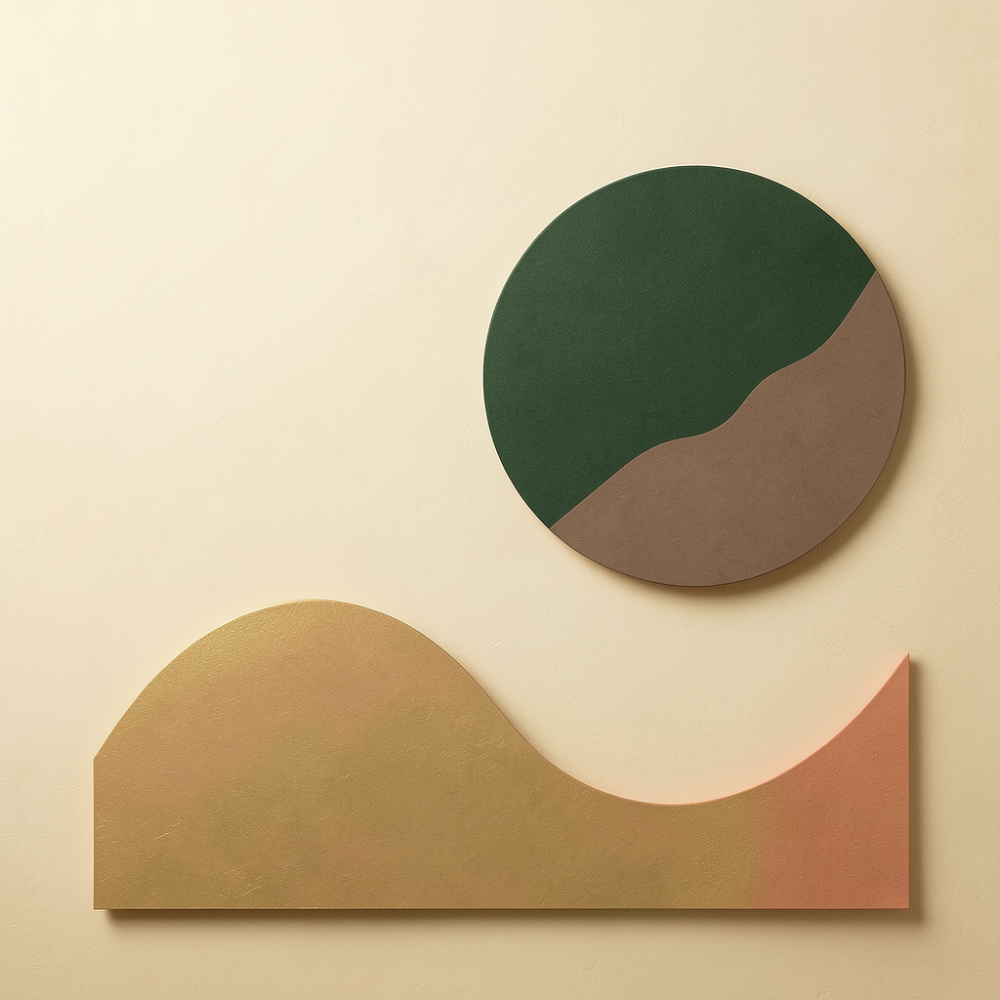

Private R&D · not production-ready · 18 July 2026
Image-authoring evidence tracker
World-aware visual generation and editing for editable PPTX-only output
Release gates
Evidence snapshot
| Check | State |
|---|---|
| Schnell creation → Klein editing | PASS |
| Local OCR no-text corpus | PASS · 28/28 |
| PPTX package + PowerPoint COM | PASS |
| Human calibration | PASS · κ 0.693 |
| Private Qwen pair endpoints | OPEN · 0/2 |
| Semantic auto-accept | FAIL-CLOSED |
| Privacy / training / resale boundary | PASS · research |
The two remaining technical gates are pair-endpoint registration and judge-vs-human calibration. No further visual review is requested.
Contextual Visual Director
Authoring Excellence integration · World-aware generated visuals · evidence refreshed 18 July 2026 · latest release: 55 suites / 790 assertions green
Authoritative release gate after Qwen integration
The release suite includes the private Qwen adapter, two-profile inventory, rendered IMG8 coherence corpus, black-box boundary, PPTX/COM corpus and all prior image-generation gates. Real-GPU canaries remain intentionally outside the deterministic suite and are linked in the live panels below.
Latest movement · private semantic-judge billing metrology
The engine now records private Qwen review attempts and bounded L40S GPU seconds separately from FLUX creation/edit compute, with cold-start/GPU-family labels only. The cost model uses the dedicated semantic-judge field and safely inherits the reviewed FLUX L40S basis for older catalogs. No worker URL, account, model, token, or image content enters the public result. Open the owner-reviewed cost catalog · Open the focused verifier.
Latest IMG2 movement · same-packet Schnell/Klein live bake-off

The same three-case packet passed on both Schnell creation profiles and both Klein edit/reference profiles at 768×512/1 step. Peak-memory telemetry is now recorded for each lane; Schnell cold GPU portions were approximately $0.0117–$0.0167 and Klein cold portions $0.0056–$0.0057, with warm calls below $0.001. The first run found a stale second Schnell route returning 404; the pinned worker was redeployed and both profiles were rolled over, after which all 12 calls passed. This is resource/provider evidence, not calibrated semantic acceptance; Qwen remains abstain-only. Open the bake-off report · Open the private verifier.
Latest research movement · photorealistic consented-subject photofit

This is the first current evidence using the real photorealistic human target rather than shape-only synthetic fixtures. Both profiles used the full-body image plus multi-angle face board as two in-memory references, returned distinct realistic full-body portraits, and passed the corrected portrait aspect/texture gates. The scope attestation forbids public endpoints, persistent cloud storage, customer delivery and training; no public handle was created. It is research evidence, not final identity/texture acceptance. Open the research report · Open the contact sheet.
Latest research movement · bounded head/skin/hair refinement

The bounded second pass changed both outputs while preserving the full-body portrait contract and passing the corrected geometry/texture gates. It is an experiment toward the required face/head quality, not yet a claim of perfect identity matching; human perceptual scoring and broader multi-angle validation remain open. Open the refinement report · Open enlarged head crops.

Latest research movement · head-only detail → full-body re-embed

The head-only candidates show visibly finer facial detail; the re-embed step returns full-body portraits while preserving body framing and passes geometry/quality gates. This validates the technical direction, but the current re-embed still needs stronger neck-seam and identity-consistency measurement before acceptance. Open the two-stage report.
Latest research movement · four-view multi-angle face corpus

All eight photorealistic head outputs pass square geometry/texture gates and are byte-distinct. Same-view perceptual-hash distances across the two private profiles are 4, 6, 10 and 2, within the research consistency proxy. This is strong visual evidence, but deterministic hashes do not establish identity; human/VLM calibration remains deliberately abstained. Open the corpus report.
Latest research movement · photorealistic images in real PowerPoint context

The slide-context gate now proves the actual requirement: these are real photorealistic human rasters embedded as editable PPTX pictures, not vector/shape approximations. The first run revealed a stretch bug; the corrected source-aspect sizing was rerun through Microsoft 365 COM and visually inspected. This confirms packaging fidelity only; identity, texture and neck-seam acceptance remain open. Open the machine report · Open the rendered contact sheet.
Latest live movement · private Qwen semantic judge on Modal
The refreshed synthetic-only canary passed authenticated cold/warm calls on both profiles, exact revision, scorecard sanitation and private-boundary checks. The worker remains intentionally uncalibrated: the evaluator rejects auto-accept until independent reviewer labels and agreement thresholds exist. Open the refreshed canary report.
Latest live movement · Klein edit/reference on Modal

Both owner-approved edit/reference profiles passed authenticated cold/warm HTTP calls, exact pinned Klein revision, 512² PNG output and distinct-output checks. The warm accepted-response GPU portion was below $0.001 per call in this run; cold bootstrap is tracked separately as research spend. Round-robin/failover and two-process topology are already verified. Open the canary report · Open the contact sheet.
Latest IMG2/IMG10 movement · isolated Modal rotation proof
A deterministic synthetic credential store proved creation and edit/reference round-robin, first-slot failure recovery, provider-generic handles, and identical topology in two isolated processes. It made no network call and used no customer/consented-human image. This strengthens the orchestration gate; actual Modal cross-instance validation still requires the owner-configured Klein endpoints. Open the machine report.
Latest IMG11 movement · rendered 20-slide blind review corpus

This is now a real slide-context review artifact, not only an image contact sheet. The deck is PPTX-only, owned-synthetic and contains no customer or consented-human asset. Human semantic labels remain intentionally absent and fail closed. Open the review PPTX · Open the machine report · Open the contact sheet.
Latest deterministic bridge · rendered slide-context quality

The CPU evaluator now runs on actual PowerPoint-rendered slide PNGs, proving resolution/aspect/visual-information and deterministic distinctness after reopen. This is still a hard-raster bridge, not semantic or aesthetic acceptance; IMG5 human/VLM judgment remains separate. Open the quality report.
Latest movement · broader generated PPTX PowerPoint COM corpus
The IMG7 treatment canary (4 slides) and IMG12 private synthetic E2E artifact (1 slide) both reopened without repair/error and rendered through actual Microsoft PowerPoint COM. This removes the host-availability uncertainty for these generated artifacts; broader perceptual/crop coverage remains separate. Open the machine report · Open the contact sheet.
Latest generated-artifact host check · IMG12 PowerPoint COM

The actual generated private canary artifact also reopens and renders on the Microsoft 365 host. The remaining IMG9 gate is broader generated-image/crop corpus coverage, not PowerPoint availability. The artifact is synthetic and research-only. Open the COM smoke report.
Latest IMG11 movement · reviewer-ready visual packet

The packet now includes a local HTML review form with per-reviewer JSON export, an opaque machine packet and a rendered contact sheet. It contains only owned synthetic fixtures; no customer/consented-human asset, external AI or provider metadata. Open the reviewer packet · Open the packet report.
Latest source audit · semantic judge model
The exact deployed image attestation reports 102/102 package records with license evidence, including the repaired torchvision dependency. The 15 NVIDIA/CUDA records remain conservatively production-blocked; the research canary does not authorize runtime redistribution. Open the in-image inventory · Open the official model card.
Owner gate packet · one-shot decisions
The approval packet records these four decisions explicitly; it contains no secrets or customer images. Open the owner approval packet →
Latest audit correction · IMG5 license metadata
The earlier 28-gap count was a verifier bug: it ignored `License-Expression`. The corrected inventory now recognizes the frozen Linux report correctly. Deployment remains fail-closed until exact in-image notices, CUDA/NVIDIA terms, owner/legal approval and blind calibration are complete. Open the corrected inventory report.
Latest operations movement · redacted Modal account inventory
The approved `modal-image-edit` pool is now durable and live on two independent private Modal profiles with round-robin/failover. 3D remains at its two-profile baseline and expansion is explicitly deferred. Local Piper is a CPU sidecar and needs no Modal account. No secret values or endpoint URLs are displayed. Open the redacted inventory report.
Latest host validation · IMG9 PowerPoint COM

PowerPoint was verified directly through COM; executable-path discovery was the earlier false blocker. The three saved PPTX artifacts reopened without error, retained editable picture objects and alt text, exported to PNG, and matched the owned source colors. Open the COM report · Open the rendered contact sheet.
IMG5 inventory preflight · corrected audit
This remains an offline contract preflight: no package installation, model download, Modal call, customer image or external AI. Open the corrected inventory report.
G1 public-safety movement · generation black-box
The cold public client cannot retrieve source, paths, provider/model details, or introspection tools. The bounded multi-asset/version corpus is green; final owner review and release-image evidence remain. Adversarial report · Fixture report.
Latest PPTX crop corpus · IMG9

Each case is a separate PPTX-only artifact with editable picture XML, valid media relationships, alt text, accessibility score 100 and no GLB/FBX export. Open the saved crop PPTX artifact · Open the machine-readable report.
Latest multi-case repair corpus · IMG6

Each case starts with a measured deterministic failure, receives one diagnosis-driven callback, improves the same hard metric, remains under the 0.02 USD local ceiling and records only opaque synthetic digests. Open the machine-readable corpus report.
Latest treatment canary · IMG7

The deterministic router now has pixel evidence for cutout alpha coverage/edge density, background-only extension, ≤35% local repair locality, collage cell bounds and editable PPTX fallbacks. Open the saved treatment PPTX artifact. This does not claim semantic quality or production approval.
Latest private end-to-end canary · IMG12
gen://image/<hash> handle; locked dry-run had no remaining generation.This is a private research canary using the frozen 512² FLUX.2 Klein 4B owned-synthetic output (visual evidence, saved PPTX artifact). No consented-human or customer image was sent; no external Claude/GPT-style AI was used. It proves the end-to-end plumbing, not production approval or human perceptual acceptance.
Latest verified movement · IMG9
Generated visual plans now carry meaningful alt text, stable reading-order names, a native editable-image fallback and an explicit PPTX-only boundary. This is contract evidence; real generated-image embedding, PowerPoint repair-free reopen and crop parity remain pending.
Latest package movement · IMG9
An owned synthetic raster was embedded into a saved PPTX and checked for media content types, alt text, relationship targets, package validity, accessibility score and absence of GLB/FBX export.
Latest verified canary status · IMG5
Latest evidence is one owned-synthetic FLUX.2 Klein 4B reference edit on Modal. It is not a customer-image test, not a human calibration result and not production approval.
Latest bounded repair · IMG6


This is a private synthetic repair proof, not a claim of calibrated semantic acceptance. Multi-case failure corpus and judge callback remain pending.
IMG10 tenant identity bridge
No raw account or license identifier is returned as a storage path key. Live account-scoped distributed-store and Mission Control owner review remain gated.
IMG11 blind review packet
The packet is ready for owner/design reviewers; it intentionally does not claim human agreement until labels are collected independently.
Private Modal canary · bounded synthetic evidence

The canary passed its strict $0.02 GPU-portion ceiling and records exact model revision, output digest and peak memory. It is research evidence only; legal/runtime, human calibration, broader corpus and owner approval remain blocked.
Current status · 17 July 2026
End-to-end implementation goal · IMG0–IMG12
Full objective, architecture, costs and quantitative completion gates: plans/betterpptx-image-generation-authoring-excellence-end-to-end-goal-2026-07-17.md.
Binding dual-model routing
Premium from-scratch profiles may later generate one controlled candidate from each lane and select with the independent evaluator. Public clients request capabilities, never model names.
IMG2 movement evidence · what changed
create, edit, reference, multi-reference; no model selector.gen://image.Private build log
Negative evidence retained: missing Git → immutable tarball; unavailable tokenizers final → compatible stable 0.22.2; Windows charmap crash → forced UTF-8. Success: the exact-pinned image built in 126 seconds; the separate scale-to-zero app deployed; a CPU-only function exported all 105 resolved package versions from the actual container. The private worker has now completed one visual canary and a two-call same-container benchmark using only the owned synthetic fixture. License metadata is attached to the inventory; unresolved transitive-license review remains a production blocker.
Resolved-build audit
The first live inventory exposed both base-image protobuf 6.31.1 metadata and the requested 7.35.1 pin. Even if Python selected the newer code, that ambiguity is not accepted. The build now removes the base copy before installing the audited pin, and the contract gate rejects every duplicate normalized distribution name.
Managed-runtime shadow audit
The clean worker layer still observes older certifi, idna, protobuf and typing_extensions metadata injected by Modal outside the pip layer. The full attestation now records both distribution locations and the version Python selects. Only those four managed-runtime shadows are allowed; every other duplicate fails, and each direct dependency must resolve to the worker's exact pin.
Live single-reference synthetic canary · actual pixels

Cost uses Modal's current published L40S rate and covers the GPU portion only; CPU, memory and persistent-volume costs remain separate. This is one positive canary, not a calibrated quality claim or an IMG2 completion claim.
Warm-benchmark preflight
The preflight still expected the literal phrase live-canary-pending after the first canary had changed the lock to broader-canary-pending. The gate now verifies the substance—production remains pending and explicit safety/retention blockers exist—so status wording cannot accidentally block valid research or weaken production controls.
Same-container cold/warm benchmark · deterministic result


Both PNG files have SHA-256 487d4344…9352b28. Cost applies Modal’s published L40S GPU rate of $0.000542/s; CPU, memory and volume charges are excluded.
Multi-reference bake-off · both roles visibly honored
One four-step L40S request, one container, no retry, no human/customer asset and no GCP. The long 484-second local wall time was dominated by app registration/cold orchestration; metered active GPU time was 14.967 seconds.
Multi-reference invocation preflight
All interruptions were local CLI parsing failures before app initialization. The installed SDK documents the per-process MODAL_PROFILE selector; it will target betterpptx-fluxworkerai1 without changing the unrelated active global profile. Fixture, prompt and bounds remain unchanged.
Release regression after live movement
Includes provider compatibility, capability routing, single/multi-reference contracts, live-artifact integrity and economics, exact-runtime licensing, deterministic image quality, frozen synthetic corpus, OCR adapter, semantic-judge contract, candidate ledger, repair loop, fail-closed VLM worker and worker-response boundary contracts, Visual Director, tenant durability, PPTX embedding, privacy and compiler determinism. Last full run: 2026-07-17 14:42:52 +03:00; targeted worker-response tests are green.
Runtime license inventory · gated snapshot
The CUDA entries stay conservatively proprietary, but the sold artifact is PPTX-only: customers receive neither runtime, weights nor container. Any runtime distribution is fail-closed; current official CUDA terms, Apache model/source pins, MPL obligations and production legal sign-off are recorded in LICENSE-REVIEW.md.
Frozen canary economics · distinct visuals are not double-counted
These figures include cold-start and determinism research overhead. They are not production unit economics and exclude CPU, memory, volume and network charges. Historical runs did not measure peak VRAM; the worker now records peak allocated and reserved bytes on every future call.
IMG4 deterministic slide-frame evaluator · CPU evidence
The CPU hard-gate layer is integrated into the real image-resolution quality report. A hash-pinned local Tesseract.js runtime now scans the owned-synthetic corpus and returns unavailable/incomplete rather than falsely accepting no-text; OCR text is not persisted. The corpus-wide noText gate is green, while semantic, owner and production gates remain separate.
IMG5 independent judge boundary · private contract evidence
This is a contract and licensing boundary, not a claim that either VLM is production-quality. Candidate weights, transitive dependencies, blind human labels, agreement thresholds and Modal cost still require private audit.
IMG6 bounded repair loop · contract evidence
The contract is integrated into real image QA as a diagnosis plan, but no provider callback is executed yet. Pixel-level repair improvement and cost evidence remain gated on the audited IMG2 lanes and calibrated IMG5 runtime.
Security & resale boundary
Cost & external movement
consentedHumanAsset remains local and untouched by this worker.Meaning-to-pixel path now implemented
gen://image handle in the specLifecycle evidence
Durability evidence
Public authoring contract
IMG6 bounded provider repair · contract movement
No GPU call or human/customer image was used for this movement. The implementation is wired to the audited private lane, but live repair quality is intentionally unclaimed until the Modal runtime/license and calibration gates are green.
Quality boundary and next movement
Proven now: valid raster payload metadata, deterministic contextual planning, durable generic handles, tenant-safe reference hydration, capability-sensitive cache identity, fail-closed routing, exact source/model pins, owner credential rotation, metering fields, PPTX embedding, single-reference fidelity, role-separated multi-reference synthesis, measured cold/warm cost, repeatable byte-identical output, CPU deterministic focal/quiet/blank/aspect/duplicate/palette/cutout gates, hash-pinned local OCR corpus evidence, an abstaining semantic-judge contract, and a provider-backed repair orchestrator with hard cost/attempt ceilings.
Not falsely claimed: two positive synthetic designs do not prove corpus-wide fidelity, a universal quality advantage, accepted-image economics, peak VRAM, endpoint failover, production safety, calibrated judge agreement, live repair improvement or final legal approval. Next: register the approved pair endpoints, rerun the direct private judge benchmark, and retain the fail-closed semantic/perceptual and owner gates.
IMG3 series capsules · deterministic anchors
This is deterministic direction evidence, not a claim of perceptual coherence across a rendered deck; the broader series corpus and human rubric remain pending.
IMG5 calibration contract · fail-closed evidence
The 20-record fixture is explicitly marked synthetic and cannot authorize production. Real blind reviewer labels remain required.
Boundary and Linux-audit movement completed 2026-07-17: Modal-only VLM policy is contract-tested (18/18), provider repair is 7/7, and the full release suite is now 33 suites / 500 assertions green. The Linux target records 66 wheel metadata entries and 15 conditional CUDA/NVIDIA dependencies with a digest-pinned evidence file; approval remains blocked pending exact in-image review.
IMG7 treatment routing · deterministic safety layer
The planner routes and constrains treatments; it does not claim pixel quality until the audited private worker and broader treatment corpus are exercised.
IMG8 whole-deck coherence · deterministic revision
IMG8 is a deterministic planning gate only. It does not claim pixel-level cross-slide coherence until a rendered multi-slide corpus and independent rubric are exercised.
IMG9 accessibility and editable PPTX contract
This movement validates the plan contract; real generated-image embedding, PowerPoint repair-free reopen and crop parity remain to be exercised.
Latest movement: IMG9 accessibility/editability 10/10; IMG8 series coherence/revision 10/10; IMG7 treatment routing 10/10; series/anchor director 8/8; Visual Director 16/16; full release suite 34 suites / 510 assertions green. Live treatment, rendered series, package/COM and independent human calibration corpora remain pending.